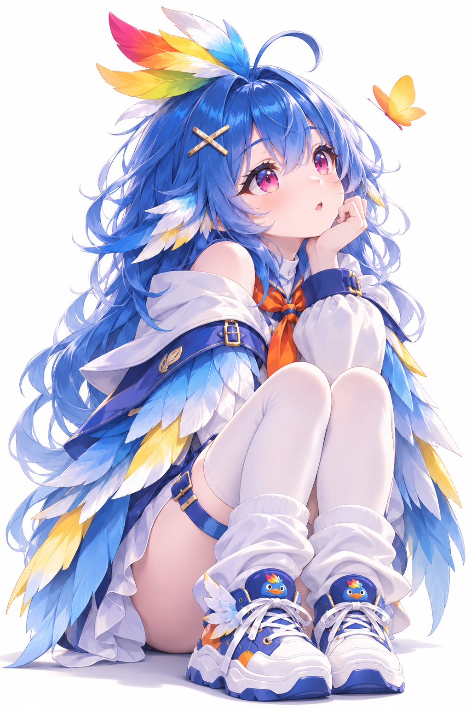

COMMUNITY CHARACTER ARCHIVE
彩羽小鸟，
无限可能。
Cong 娘创作资产库
整理角色参考图、生成提示词与动态表情，让每一次二创更轻松。保留彩虹冠羽和小鸟的灵动，不限制新的画风与想象。
非官方同人项目 · AI 辅助创作 · 素材授权待确认
01 / CHARACTER REFERENCES
角色参考
同一个角色，两种比例；参考不是限制。
02 / CREATIVE GALLERY
作品画廊
立绘、表情与创作灵感。
03 / ABOUT
关于 Cong 娘
Cong 娘源自彩毛小鸟头像的拟人创意，以蓝色羽毛、彩虹冠羽、玫红瞳色、橙色领巾作为参考视觉锚点。项目独立制作 Cong 娘素材，参考了 鲸鱼娘资产库 的资源组织与角色参考图形式，不使用鲸鱼娘角色图。
这是唯一的标准人设吗？
不是。参考图为一致性创作提供基础，允许不同风格和比例。身份、身高、性格等均为创作提案，不是对现实人物的描述。
可以商业使用或转载吗？
目前视觉资产授权待确认，未授予公开再分发、商用或训练许可。请先取得相关权利人确认。代码与图像授权分别管理。
有 ComfyUI、LoRA 或 Live2D 吗？
暂未提供经过验证的工作流、模型权重或分层文件；现阶段提供参考 PNG、GIF 和文本 Prompt。
04 / CONTRIBUTE
让更多创意飞起来
欢迎提出设定建议、提交原创作品或推荐相关工具。投稿请注明作者、来源、生成方式和授权范围。
部署到 GitHub Pages 后可从本站直接跳转仓库 Issues。